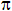

SIN()
Syntax
Sine as N = SIN( Radian_Angle as N )
|
Argument |
Description |
|
Radian_Angle |
A number between -  and + . |
Description
Returns the sine of a Radian_Angle. For angles measured in degrees, use SIN(DTOR( Degree_Value )).
Examples
|
sin(0) -> 0 sin( dtor(90) ) -> 1 |
See Also